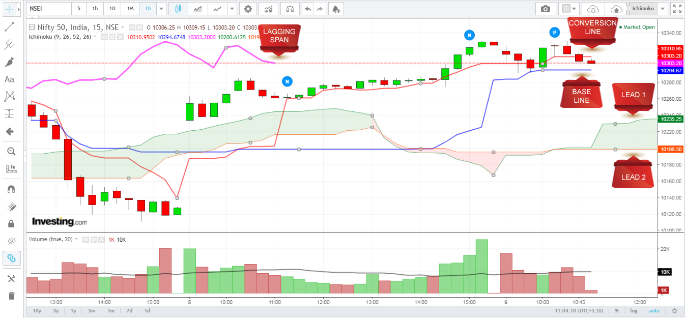

The Ichimoku Cloud is like a Swiss Knife indicator that suggests support/resistance, direction of momentum or trend, and alerts you when a buy or sell gets trigerred.
It is like a MACD, Multiple MA, mini Fibonnacci.
Though it looks visually complicated, it is a very simple indicator. In this tutorial, I will stick to the basics, avoid the Japanese lingo, and help you visually understand the signals without getting into a deep analysis.
The 5 Elements of the Ichimoku Indicator

{kind=link}
Conversion Line: Think of it as a, more or less, 9 Day EMA
Base Line: Think of it as a, more or less, 26 Day EMA
Lead 1: Average of Conversion and Base Lines
Lead 2: Average of (52-period high + 52-period low)
Lagging Span: Current price, plotted 26 periods in the past so that traders can view the exact current price while analyzing the other elements of the Ichimoku. Also, this somehow plays a role in shifting the cloud forward by 26 periods.
Understanding the “Cloud” in the Ichimoku Indicator
Study the image above. You will see two peculiarities:
1. That the area between lines Lead 1 and Lead 2 is either shaded light red or light green
2. That the cloud extends much beyond the current price (extends it by 26 periods).
A light green cloud is formed when Lead 1 Crosses Lead 2 (the shorter average shooting above the longer average) and a light red cloud is formed when Line 2 pierces Line 1 (the longer average falling below the shorter average).
(2) is extremely important because it helps traders determine future levels of support or resistance. It works like a Fibonacci levels indicator as you will figure out when you are done with the article.
Obviously, you’d have figured out that the red cloud denotes bearishness and the blue cloud indicates bullishness. That is ok, but there is a certain method of analyzing the Ichimoku.
Setting Up the Ichimoku Indicator
I’ve used the following colour codes:
{kind=link}
Conversion Line – Red
Base Line – Blue
Lagging Span – Pink
Lead 1 – Green
Lead 2 – Orange
How to Interpret Buy and Sell Signals Using the Ichimoku Cloud
BUY SIGNALS
CONVERSION LINE CROSSES BASE LINE UPWARDS: Bullish for traders or investors depending on the time period you are using. If you use 15m-1 hour candles, the signal can hold good for 1-2 days, and longer if you use a longer period.
WHEN PRICE CROSSES CONVERSION LINE UPWARDS: This is a clear bullish signal. However, the price should hold for 1-2 candles above the conversion line before you make any trade.
SELL SIGNALS
CONVERSION LINE CROSSES BASE LINE DOWNWARDS: Bearish for traders or investors depending on the time period you are using. If you use 15m-1 hour candles, the signal can hold good for 1-2 days, and longer if you use a longer period.
WHEN PRICE SLIDES BELOW BASE LINE: This is a clear bearish signal. However, the price should hold for 1-2 candles below the Base line before you short the stock.
How to Interpret Trends Using the Ichimoku Cloud
UPWARD TREND
When the price is above the cloud, the stock is in an uptrend. If the cloud is green when the price is up, it implies that the uptrend is strong. If the cloud is red, it implies the uptrend is weak.
DOWNWARD TREND
When the price is below the cloud, the stock is in a downtrend. If the cloud is red when the price is down, it implies that the downtrend is strong. If the cloud is green, it implies the downtrend is weak.
NO TREND (In a range)
The rangebound phase is triggered the prices move inside the cloud.
How Ichimoku Cloud Sets Support and Resistance Levels
Lead 1 and Lead 2 act as support (if the price is above the cloud) and resistance (if the price is below the cloud).
How Ichimoku Cloud Sets FUTURE Support and Resistance Levels
One solid advantage of Ichimoku is that it sets future support and resistance levels by plotting lines Lead 1 and Lead 2 twenty-six periods into the future. The following examples will help you understand how to interpret these.
EXAMPLES THAT WILL HELP YOU UNDERSTAND HOW ICHIMOKU CLOUD WORKS
A. NIFTY 1-DAY ICHIMOKU (Note that the trend can change as prices reverse):
{kind=link}
A. NIFTY 1-DAY ICHIMOKU (early 2017):
{kind=link}
A. NIFTY 1-MONTH ICHIMOKU (current):
{kind=link}
Well, that’s about it. Practice it a few times and I’m sure you will find it immensely helpful like I do.
This topic suggested by:
Trading strategies on ichimoku cloud system.
— Neeraj Gupta (@noob_neeraj) April 1, 2018
Thank you so much sir for teaching us this valuable setup really helpful to understand market more for small trader or investors god bless you
How to read option data nifty and bank nifty.how can we check live option data and decide where FII or pro is making position.what happen when marker goes highest posion option data and how to understand.shortcovering or long unwinding is happening in live market.whatis relation between option data and future open interst data.what open interest data is in nseindia is option buy or sell contract.it make me very confused.
Sir how to set target and time period to achieve target
Sir, Thank you for the this article. But does it imply that we should go long once the prices breaks out of the cloud and then also goes above the red line? In that case, do we keep the stop loss as the base line?
What you have mentioned implies a bullish signal. Use it together with this setup and you’ll get solid results: https://bullbull.in/blog/this-trade-setup-results-in-profits/
Dear sir,
Thanks a lot for your efforts. kindly can you share with us what is the importance of Lagging Span – Pink line.
Regards,
Reddy.
Sir plz educate us about using CCI & RSI together to generate calls.
Sir how do we get this software
ADx
MACD
Stochastic
Bollinger bands
RSI
Indicators in easy to understand article s
Thanks for this set up. How should we determine our stop loss in this set up.
Use the lines generated by the indicators as support and resistance
thank sir for the amazing info.
I am still a little confused with interpreting the cloud. for example,
The stock is currently trading below the red cloud (hence a sell signal), but the red cloud is followed green cloud (which is in the future). What does this mean? I hope you can understand my question
Hi Sunil,
I have started learning and thanks to your articles, well articulated and simple.
One doubt, If lead 1 is the average of Base and conversion lines, shouldnt the the lead1 line be in between the two and not above or below. (In the very first chart, lead 1 is below both base and conversion lines)
The span lines are plotted ahead